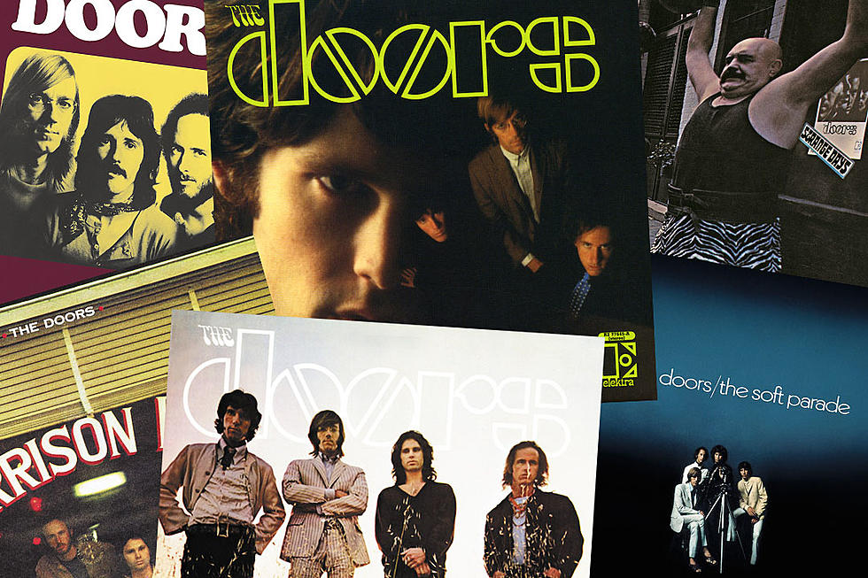

Najbolji albumi od Ivana i Toni
| Naziv | Izvođač | Godina izdanja |
|---|---|---|
| Dark Side of the Moon | Pink Floyd | 1972 |
| The Doors | The Doors | 1967 |
| John | Doe | 80 |

The Doors
je američka psihodelična rock grupa, osnovana u Los Angelesu 1965. godine. Samo šest godina prošlo je od osnivanja grupe The Doors pa do smrti Jima Morrisona 1971. godine. Za to vrijeme, grupa je objavila šest studijskih albuma i ostavila nezaboravni trag svojim mnogobrojnim i često kontroverznim koncertnim nastupima kojima su učvrstili legendu o Jimu Morrisonu. Njegovi stihovi koje je pjevao u rezonantnom baritonu, ispoljavaju prefinjenost školovanog pjesnika i ulični nivo neposrednosti rock tekstopisca. To je pogotovo uočljivo na njihovim najznačajnijim albumima The Doors i Strange Days, gdje grupa ispoljava zvuk "acid rocka", a ovim albumima dovodi psihodelični rock do njegovih krajnjih granica. Ova muzička grupa spada među najintenzivnije i revolucionarne grupe iz 1960-ih, a njihov utjecaj se osjeća sve do danas. Utjecaj njihove meteorske karijere odjekuje daleko izvan njihove kratke poludecenijske karijere dok su snimali muzičke albume i svirali koncerte. Njihove riječi u pjesmama i muzika najbolje oslikavaju neospornu moć revolucionarnog duha iz 1960-ih. Kult ličnosti i dalje okružuje Jima Morrisona, njihovog burnog pjevača koji je uveo pozorišno uzbuđenje u rock muziku iz tog vremena. Grupa The Doors je više nego i jedna druga muzička grupa oslikavala nemirna vremena iz 1960-ih i sukob generacija.[1] Primljeni su u Rokenrol kuċu slavnih (eng. Rock and Roll Hall of Fame) 1993. godine.[2]Nesto malo i o Pink floydu